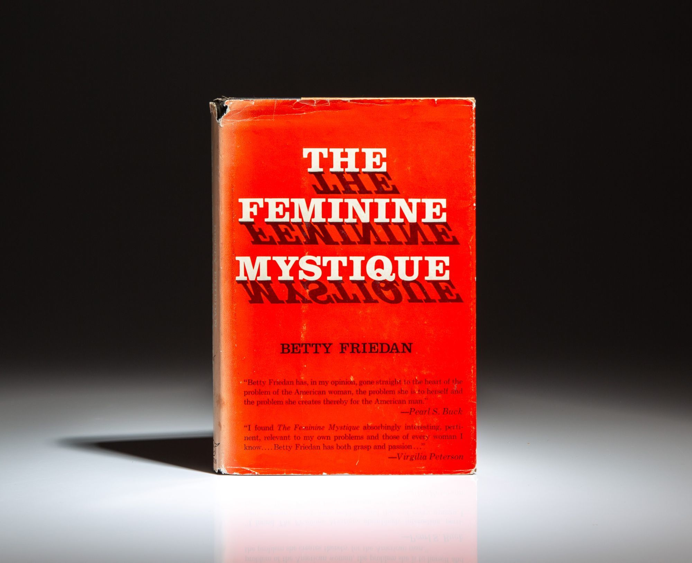

1963
The Feminine Mystique
This is an original copy of The Feminine Mystique, written by Betty Friedan and published in 1963. The Feminine Mystique focused on the dissatisfaction many middle class women felt in the 1950s during a societal shift back toward traditional gender roles. These women found that they were expected to find complete happiness and fulfillment through marriage, motherhood, and running a household. Friedan, in a quote from her novel, says, “The problem has no name,” showing how many women were frustrated by being limited to the role of housewife and caretaker despite having education, talent, and ambitions outside of the home. The Feminine Mystique sparked a second wave of feminism after a return to traditional values. This book became an important part of the women’s rights movement during the 1960s because it challenged the idea that women naturally only belonged in the home. Unlike the earlier post-World War II period, when many women were pushed out of their wartime jobs and back into domestic roles, The Feminine Mystique encouraged women to question why they were being kept from more meaningful work and independence. Friedan writes that, “I want something more than my husband and my children and my home.” This quote reflects not a rejection of family life, but instead a rejection of the idea that family life had to be a woman’s whole purpose. Social attitudes began to shift in the 1960s. Women were no longer being discussed as just wives and mothers, and instead as individuals who deserved equal opportunity in both education and employment. Around the same time, policy changes also began to support this shift. The Civil Rights Act of 1964 made sex discrimination in employment illegal, and organizations like the National Organization for Women, founded in 1966, pushed for stronger enforcement of women’s workplace rights. Overall, The Feminine Mystique represents a growing dissatisfaction with traditional gender roles and the beginning of a stronger push for women to enter and remain in the workforce on more equal terms in this decade.